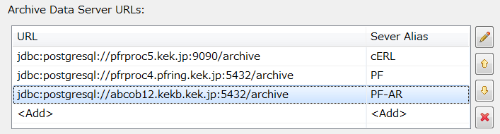
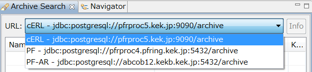

Data Browser Changelog
Version numbers in here refer to the plugin org.csstudio.trends.databrowser2.
Version 3.2.12 - 2013-11-22
- Add X and Y labels on the axis when the Show value labels option is activated.
- Fix Archive Search: On error, the search pattern and button were disabled, requiring close/re-open of the search panel.
Version 3.2.11 - 2013-11-06
- Fix zoom bug:
When scrolling, zooming into 'left' area of plot such that the
scrolling gets disabled because 'end' is no longer close to 'now', the
start/end times were wrong, using start of the zoomed area as the end.
- 'Trace Type' includes "direct" option for Area and Single line that uses a linear connection from sample to sample, no stair-step.
Version 3.2.2 - 2013-09-23
- Fix: 'Export' failed with multiple data sources unless every source knew the channel.
Version 3.2.1 (KEK 3.2.0) - 2013-06-13
- Supports alias name of Archive Data Source URLs to recognize Data Source more easily in Archive Search view.


 'Refresh' option in plot's context menu to re-fetch archived data.
'Refresh' option in plot's context menu to re-fetch archived data.
Version 3.2.0 - 2013-01-31
- Export with linear interpolation.
- PVManager instead of utility.pv.
Version 3.1.3 - 2012-12-07
- CSV File import can import from exported single-channel data file.
Version 3.1.2 - 2012-08-23
- When retrieval from one archive data source fails, continue with others (used to stop retrieving).
- CSV File import from context menu failed on empty plot (no value axis).
- Enabled double buffering by default for all platforms.
Version 3.1.1 - 2012-07-20
- Menu File/Open can open out-of-workspace files. To save, enforces SaveAs to select workspace file.
- More of the plot settings are saved: Title, legend on/off, grid lines, ...
- For waveform PVs, the array element to plot can be selected. Same waveform PV can be displayed multiple times to show different array elements.
- Import data from CSV File as data source (rows must match
YYYY-MM-DD HH:MM:SS.SSS number).
- Spreadsheet export presents min/max of "optimized" data in columns suitable for error bar display.
- Matlab Export can use binary
*.mat files in addition to *.m text files.
Version 3.1.0 - 2012-01-30
- Search with empty channel name pattern gives info dialog, no channels.
- New option to always use 'default' archive data sources, ignoring sources from (old) *.plt.
- New option to log archive access errors instead of prompting in dialog.
Version 3.0.2 - 2011-08-25
- swt.xygraph - Fix for horizontal zoom that would 'invert' traces